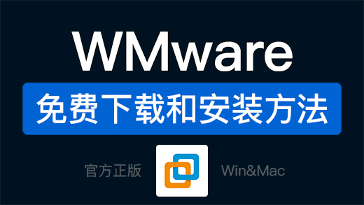
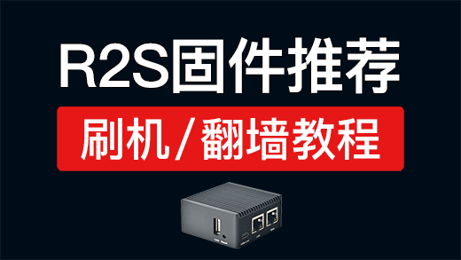
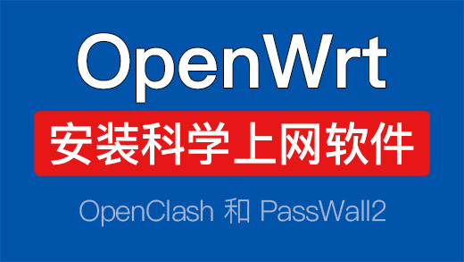
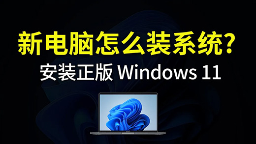
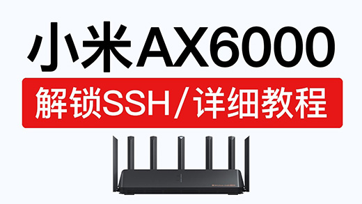

科技分享
首页
机场评测
软件下载
手机翻墙
电脑翻墙
软路由
VPN

VMware虚拟机免费安装教程，VMware Workstation Pro 17 和 VMware Fusion 13 Pro 下载使用
【MAC】虚拟机安装openwrt软路由，全屋高速翻墙！vmware fusion mac openwrt 安装旁路由

R2S固件推荐下载，安装passwall2,openclash,ssrplus等，r2s openwrt 刷机
Proxy SwitchyOmega教程，添加规则设置，配合v2rayN和Clash使用
V2ray订阅转clash订阅，clash订阅转v2ray，支持本地转换订阅
CloudFlare 优选ip 和 优选域名方法，节点加速必备！支持在线网站ipv6，cf优选ip
Hysteria 2 一键安装教程，搭建歇斯底里2协议节点，sing-box配置使用方法

OpenWrt软路由安装科学上网插件，openwrt安装openclash,passwall2 ipk
Clash和v2ray哪个好用，翻墙速度对比，clash和v2rayn区别，clash和clash verge哪个好
小米路由器AX3000T解锁SSH，安装ShellCrash科学上网，安装Clash翻墙
宝塔面板安装wordpress教程，wordpress建站搭建新手入门教程，wordpress教学
Windows 10系统安装教学，操作简单！win10重装系统u盘怎么分区，Win10 22H2如何更新？

新电脑安装 windows 11 系统，操作非常简单，设置安装win11|新电脑怎么装作业系统？
新电脑12个常用设置，让电脑更好用！新电脑到手需要做的操作 win11

小米路由器AX6000解锁SSH，只需一台电脑轻松搞定，xiaomi ax6000固件刷机，AX9000 ssh
红米路由器AX6000解锁SSH，操作非常简单，redmi ax6000 ssh 固件刷机
小米路由器降级方法，红米路由器固件降级提示：“出于安全考虑，不允许选择低于当前版本号的固件进行升级”